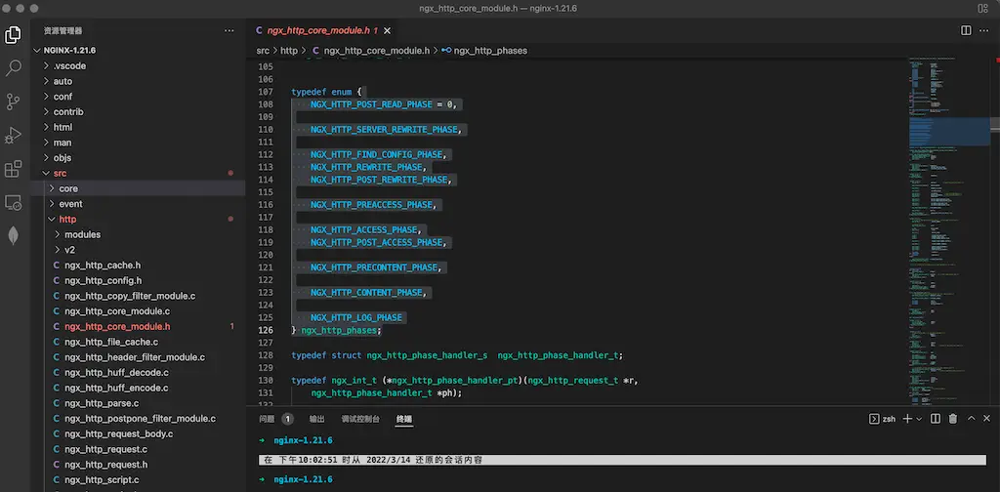
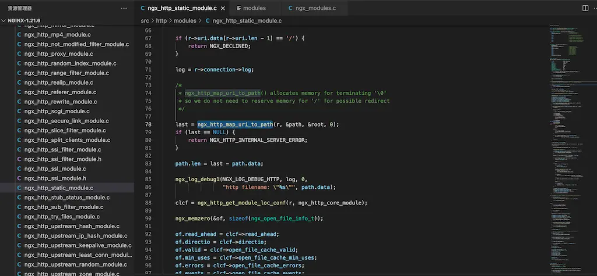
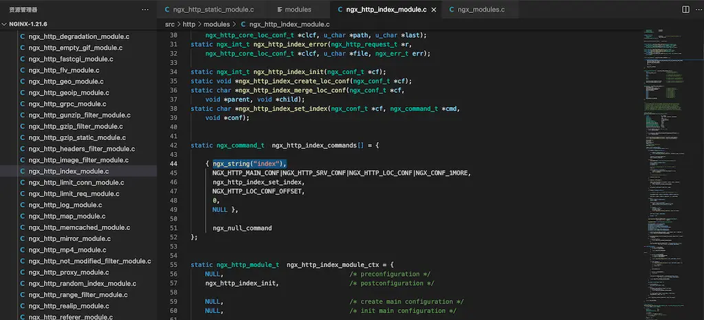
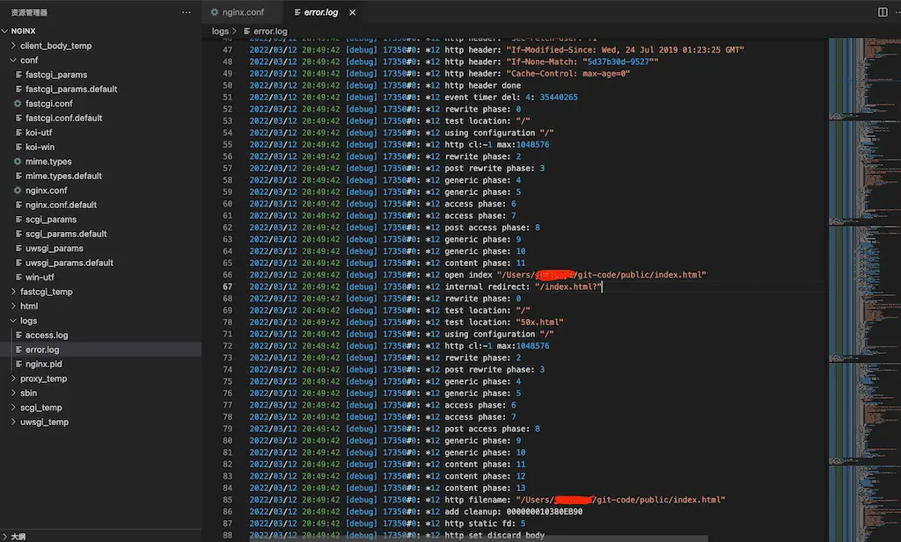

HTTP模块
AI 导读一分钟导读，先掌握全文主干。
核心观点
- nginx HTTP 主链路共 POST_READ 到 LOG 11 个阶段，模块靠注册 handler 挂载
- POST_REWRITE 阶段若有 rewrite 会跳回 FIND_CONFIG 阶段
- 2026 更新：v3 模块成熟、双监听配置与 1.31.2 集中修复三处漏洞
关键结论与取舍
- 理解阶段序就能预判模块行为，排 bug 事半功倍
- HTTP/2+HTTP/3 双监听配置可直接抄，注意变量与安全线
核心模块阶段
这是 nginx HTTP 请求处理的主链路 11 个阶段（POST_READ 到 LOG）：一个请求依次穿过每个阶段，各模块通过注册自己的 handler 挂到对应阶段上。看懂这张图就理解了为什么 rewrite 在 access 之前、try_files 属于 precontent 而不是 content——中间件 / 模块做事的时机全由阶段决定。
POST_REWRITE 阶段如果有 rewrite，就会跳回 FIND_CONFIG 阶段
源代码中的定义，如下图所示：

FastCGI模块
FastCGI 解决的是老 CGI 每个请求 fork 一个进程的性能灾难：常驻的 CGI 进程池 + socket 通信，一条 BeginRequest 记录带上请求参数，Params / Stdin 记录送数据，CGI 进程处理后用 Stdout / EndRequest 记录回传。nginx 的 fastcgi_pass 就是这条链路的客户端——php-fpm 之类
static模块
把请求 url 里的 path 映射到本地路径，读取本地文件返回客户端
坑：root 和 alias 的路径拼接规则不同——location /download/ 配 root /var/www 会找 /var/www/download/xxx，配 alias /var/www 则直接找 /var/www/xxx；alias 用在 location 前缀和磁盘目录不一致的场景（比如 /static/ 映射到 /srv/assets
核心源代码，如下图所示：

index模块
引入配置参数 index，如下图所示：

请求 url 是目录时，把配置参数 index 的值附加到 url 上，然后内部跳转
static ngx_int_t
ngx_http_index_handler(ngx_http_request_t *r)
{
...
if (index[i].name.data[0] == '/') {
return ngx_http_internal_redirect(r, &index[i].name, &r->args);
}
...
ngx_log_debug1(NGX_LOG_DEBUG_HTTP, r->connection->log, 0,
"open index \"%V\"", &path);
...
return ngx_http_internal_redirect(r, &uri, &r->args);
}跳转调试日志，如下图所示：

HTTP 与 HTTP/3 模块更新（2026）：v3 模块成熟与 1.31 安全线
进入 2026 年，nginx 的 HTTP/3（QUIC）已经走出实验期：官方模块定名为 ngx_http_v3_module，自 1.25.0 起就随 Linux 官方二进制包一起分发，不再需要自编译。本节基于 2026 年现状做一次纠错和更新。
先纠正一个流传很广的误解：官方配置里 不存在 http3 on|off 指令 。启用 HTTP/3 靠的是 listen 指令的 quic 参数，而不是什么开关指令——旧小节里的写法应该按本节替换。
模块定名与可用范围
官方文档以 ngx_http_v3_module 作为 HTTP/3 模块名，单列了《Support for QUIC and HTTP/3》章节。2026 年现状要点：
- 自 1.25.0 起支持 QUIC / HTTP/3，已包含在官方 Linux 二进制包中
- 启用语法为
listen 443 quic reuseport;，不存在 http3 指令 - QUIC 强制要求 TLSv1.3（
ssl_protocols默认已启用） - 源码构建推荐 OpenSSL 3.5.1+；低于这个版本会退回 OpenSSL 兼容层，不支持 early data（0-RTT）；也可以换 BoringSSL / QuicTLS / LibreSSL
HTTP/2 + HTTP/3 双监听配置
server {
listen 443 ssl; # TCP：HTTP/1.1 + HTTP/2
listen 443 quic reuseport; # UDP：HTTP/3（quic 参数启用，无需 http3 on）
server_name example.com;
ssl_protocols TLSv1.2 TLSv1.3;
ssl_early_data on; # 0-RTT，需 OpenSSL 3.5.1+ 或 BoringSSL/QuicTLS
quic_retry on; # 连接地址验证，防伪造源地址放大攻击
# quic_gso on; # Linux GSO 优化，网卡支持时开启
# quic_host_key /etc/nginx/quic.key; # 多 worker 共享 token 密钥
add_header Alt-Svc 'h3=":443"; ma=86400'; # 必须返回该头，浏览器才会上探 h3
}
关键点：浏览器只有在响应头 Alt-Svc 里看到 h3 声明后才会尝试 HTTP/3，这个头的格式要严格匹配；reuseport 让多个 worker 各自监听 UDP 443。
QUIC 相关变量
日志和监控用的核心变量：
$http3— QUIC 连接输出 h3，否则为空（用于 access log 分流统计）$ssl_early_data— 本次会话是否走 0-RTT，可以用于 Early-Data 头透传$ssl_sigalgs— 1.31.2 新增，TLS 1.3 签名算法
1.31 安全线：1.31.2 集中修复三处漏洞
mainline 1.31.2（2026-06-17 发布）是一次以安全为核心的更新，其中两处直接命中 HTTP/3 和代理路径，是生产升级的主因：
| CVE | 受影响模块 | 漏洞类型 |
|---|---|---|
| CVE-2026-42530 | ngx_http_v3_module | use-after-free（插入缓冲与连接池分配） |
| CVE-2026-42055 | ngx_http_proxy_v2_module、ngx_http_grpc_module | 缓冲区溢出（限制 HTTP/2 与 gRPC 上游头部长度） |
| CVE-2026-48142 | ngx_http_charset_module | 缓冲区过读（recode_from_utf8 罕见路径） |
同期还有一批外围增强：$request_id 改用 SipHash-2-4 生成提速、新增 $ssl_sigalgs 变量、Secure Link 哈希改成常量时间比较、Split Clients 范围边界计算修正、access log 的 request_length 格式修复。生产环境至少应该跟进到 1.31.2。
架构边界与验证方法
注意一个长期存在的边界：即使配了 proxy_pass，nginx 向上游发起的仍然是 HTTP/1.1 或 HTTP/2——nginx 只支持终止客户端侧的 HTTP/3，不支持以 HTTP/3 客户端身份访问上游。需要全链路 HTTP/3 时，应该在 nginx 前面放 Caddy 2.7+ 或 Envoy 1.26+ 终结 QUIC，nginx 专注静态资源、负载均衡和缓存。
验证是不是真的走通 H3：
- access log 加
$http3变量，QUIC 请求输出 h3 - Chrome 打开
chrome://net-internals/#quic搜索域名，状态 Active 即生效 curl -I --http3 https://example.com（需要 curl 编译时启用 HTTP/3）